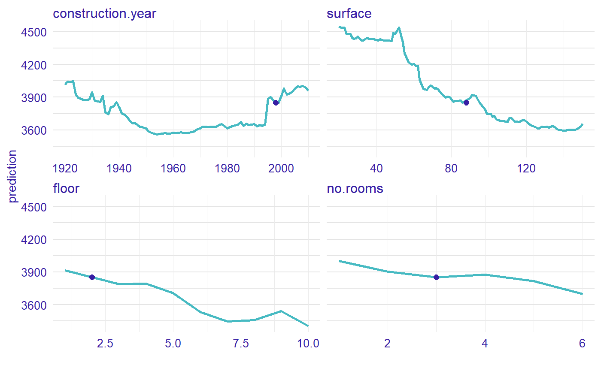
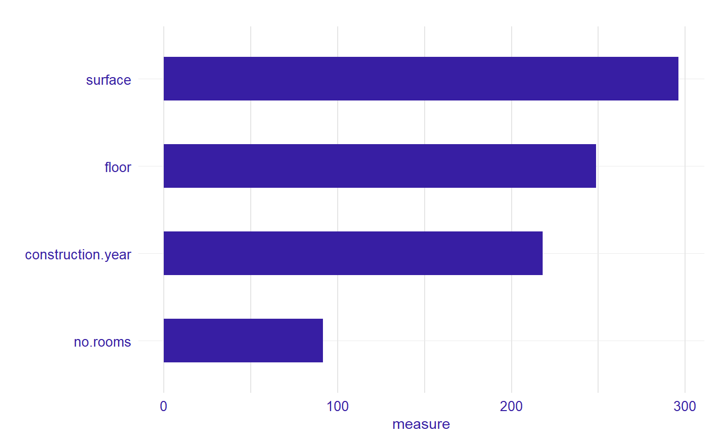

Example with random forest model
Anna Kozak
2019-06-07
measure.RmdExample with random forest regression model
In this vignette we present measure for random forest regression model.
1 Dataset
We work on Apartments dataset from DALEX package.
#> m2.price construction.year surface floor no.rooms district
#> 1 5897 1953 25 3 1 Srodmiescie
#> 2 1818 1992 143 9 5 Bielany
#> 3 3643 1937 56 1 2 Praga
#> 4 3517 1995 93 7 3 Ochota
#> 5 3013 1992 144 6 5 Mokotow
#> 6 5795 1926 61 6 2 Srodmiescie2 Random forest regression model
Now, we define a random forest regression model and use explain from DALEX.
library("randomForest")
apartments_rf_model <- randomForest(m2.price ~ construction.year + surface + floor +
no.rooms, data = apartments)
explainer_rf <- explain(apartments_rf_model,
data = apartmentsTest[,2:5], y = apartmentsTest$m2.price)3 New observation
We need to specify an observation. Let consider a new apartment with following attributes. Moreover, we calculate predict value for this new observation.
new_apartment <- data.frame(construction.year = 1998, surface = 88, floor = 2L, no.rooms = 3)
predict(apartments_rf_model, new_apartment)
#> 1
#> 3887.5734 Calculate Ceteris Paribus profiles
Let see the Ceteris Paribus Plots calculated with ceteris_paribus() function.
library("ingredients")
profiles <- ingredients::ceteris_paribus(explainer_rf, new_apartment)
plot(profiles) + show_observations(profiles)
5 Calculate measure of local varable importance
Now, we calculated a measure of local variable importance via oscillation based on Ceteris Paribus plot. We use variant with all parameters equals to TRUE.
library("vivo")
measure <- local_variable_importance(profiles, apartments[,2:5], absolute_deviation = TRUE, point = TRUE, density = TRUE)plot(measure)
For the new observation the most important variable is surface, then floor, construction.year and no.rooms.